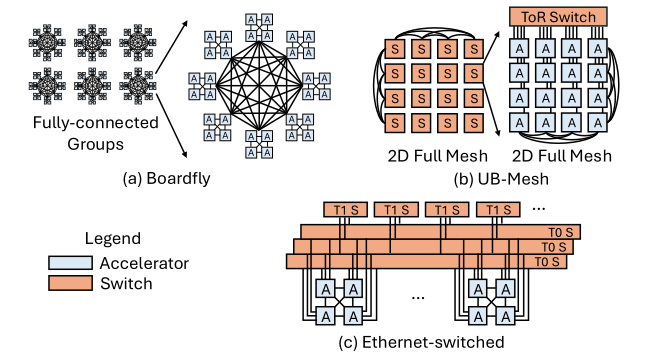

Pod-Scale Scale-Up Interconnect

At pod scale the designs get deeper rather than wider. Google's forthcoming TPU 8i introduces Boardfly, a Dragonfly-inspired topology that aggregates four-chip building blocks into eight-board groups and interconnects 36 such groups through optical circuit switches [1].
Huawei's UB-Mesh proposes a hierarchically localized nD-FullMesh on a unified bus and protocol stack; its published pod design realizes a 4D full mesh by composing full-mesh connectivity within and across racks, supported by dedicated low-radix and high-radix switches [2]. Microsoft Maia takes an Ethernet-based route: a two-tier topology whose first tier is a switchless fully connected quad of four directly connected accelerators, with the second tier using Ethernet switches to extend the scale-up domain across racks to as many as 6,144 accelerators [3, 4].
4.18.1TPU Pod, 3D Torus, and Optical Circuit Switching#
4.18.2Boardfly: Four-Chip Building Block, Group, and Inter-Group Connection#
4.18.3UB-Mesh: Hierarchically Localized nD Full Mesh#
4.18.4Maia: Fully Connected Quad and Ethernet-Switched Hierarchy#
4.18.5Local/Global Connectivity, Oversubscription, and Scaling Limits#
4.18.6Distinguishing Deployed, Announced, and Proposed Topologies#
References
- 1.Google Cloud. Inside the eighth-generation TPU: An architecture deep dive. 2026.
- 2.Heng Liao et al. Ub-mesh: a hierarchically localized nd-fullmesh datacenter network architecture. IEEE Micro, 2025.
- 3.Sherry Xu and Chandru Ramakrishnan. Inside maia 100. 2024 IEEE Hot Chips 36 Symposium (HCS), 2024.
- 4.Saurabh Dighe and Artour Levin. Deep Dive into the Maia 200 Architecture. https://techcommunity.microsoft.com/blog/azureinfrastructureblog/deep-dive-into-the-maia-200-architecture/4489312, 2026. Azure Infrastructure Blog. Published Jan. 26, 2026; updated Jan. 30, 2026.